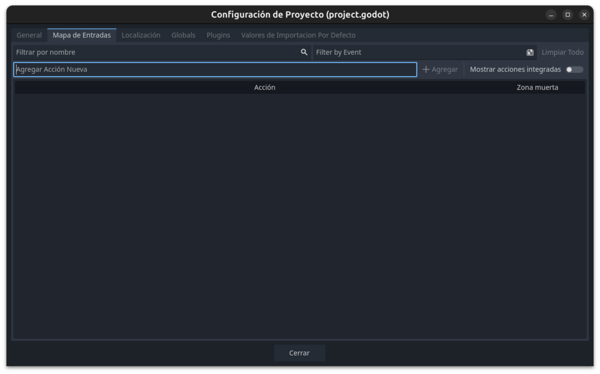

Movimiento
Vamos a pasar a dar movimiento a nuestro jugador por lo que necesitaremos en primer lugar, establecer los controles de nuestro juego y por otro lado, ya pasaremos a crear nuestro primer Script.
Mapeo de Controles
En Godot, puedes mapear los controles del juego desde el menú Proyecto > Configuración del Proyecto > Entrada (Input Map). Aquí puedes crear nuevas acciones y asociarlas a teclas específicas del teclado.

Para este caso, debes asegurarte de que las acciones "ui_right", "ui_left", "ui_up" y "ui_down" estén asociadas a las teclas de dirección del teclado (flechas). Además, la acción "ui_accept" debe estar asociada a la barra espaciadora.
- Abre el menú Input Map.
- Añade las acciones mencionadas si no existen.
- Haz clic en el botón Agregar tecla junto a cada acción y selecciona la tecla correspondiente:
"ui_right": Flecha derecha"ui_left": Flecha izquierda"ui_up": Flecha arriba"ui_down": Flecha abajo"ui_accept": Barra espaciadora
De esta forma, tu juego responderá a los controles básicos de movimiento y acción.
Script Movimiento
Ya podemos comenzar a crear el código de nuestro juego. Para ello vamos a comenzar a crear un script para la escena jugador; asociado al nodo principal.
Añadir un Script al Nodo Player
Vamos a asociar un script al nodo Player de tipo CharacterBody2D que creamos en la escena Player, sigue estos pasos:
- Selecciona el nodo
Playeren el panel de la escena. - Haz clic en el botón Adjuntar script (ícono de hoja con un signo "+") en la parte superior del editor.
- En la ventana que aparece, asegúrate de que el campo Inherit esté configurado como
CharacterBody2D. - Elige la ubicación y el nombre del archivo del script (por ejemplo,
player.gd). - Haz clic en Crear.
Esto creará y asociará un nuevo script al nodo Player. Ahora puedes comenzar a programar el comportamiento del jugador dentro de este script.
Ahora podemos ir al modo Script (en la parte superior), para trabajar con GDScript.
GDScript
GDScript es el lenguaje de programación principal de Godot, diseñado específicamente para facilitar el desarrollo de videojuegos. Es un lenguaje de alto nivel, dinámico y con una sintaxis similar a Python, lo que lo hace fácil de aprender y utilizar.
Características principales de GDScript
- Sintaxis sencilla: Inspirada en Python, lo que permite escribir código de forma clara y concisa.
- Integración total con Godot: Permite acceder y manipular todos los nodos, señales y recursos del motor de manera directa.
- Tipado dinámico (opcionalmente estático): Puedes declarar variables sin especificar su tipo, aunque también es posible usar tipado estático para mayor seguridad.
- Alto rendimiento: Está optimizado para funcionar eficientemente dentro del motor Godot.
- Soporte para señales: Facilita la comunicación entre nodos mediante el sistema de señales propio de Godot.
GDScript es ideal para scripts de lógica de juego, control de escenas, animaciones y cualquier funcionalidad personalizada que requiera tu proyecto.
Vamos a crear nuestro primer Script; verás que en la pantalla aparece:
extends CharacterBody2D
Esto indica que extiende de ese tipo de nodo (que corresponde al nodo principal asociado a este script).
Vamos a escribir el siguiente fragmento.
@export var speed = 300
func _process(delta: float) -> void:
var dir = Vector2.ZERO
if Input.is_action_pressed("ui_right"):
dir.x+=1
if Input.is_action_pressed("ui_left"):
dir.x -=1
if Input.is_action_pressed("ui_up"):
dir.y-=1
if Input.is_action_pressed("ui_down"):
dir.y +=1
velocity = dir.normalized()* speed
move_and_slide()
Warning
Cuidado!! al igual que otros lenguajes de script como python, gdscript utiliza tabulaciones o espacios para indentar y gestionar el código por lo que ten cuidado al copiar y pegar.
Instanciar Escena
Otra de las características de Godot es el poder usar nodos como escenas instanciadas. Vamos a añadir una escena player a la escena jugador.
Sigue estos pasos:
- Abre la escena
mainen el editor de Godot. - Haz clic en el botón Instanciar escena (ícono de cadena o enlace) en la parte superior del panel de la escena.
- Selecciona la escena
player.tscny haz clic en Abrir. - Verás que el nodo
Playeraparece como hijo en el árbol de nodos de la escenamain. - Ajusta la posición del nodo
Playersi es necesario, usando las herramientas de mover en el editor.
De esta forma, el jugador estará presente en la escena principal y podrás controlar su movimiento cuando ejecutes el juego.
Ya podemos probar nuestro juego y ver como la nave se mueve.